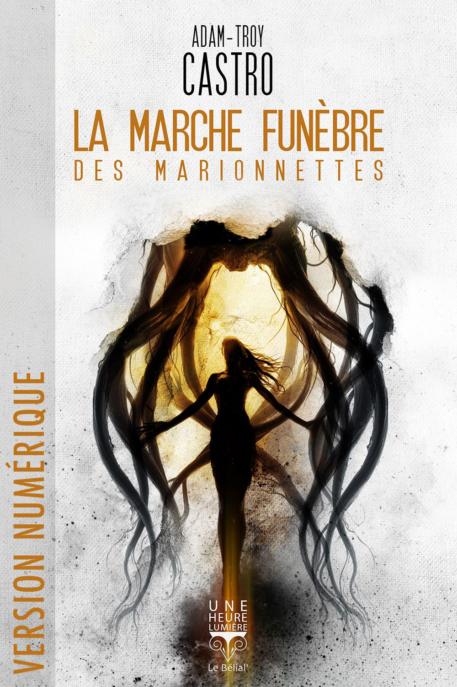
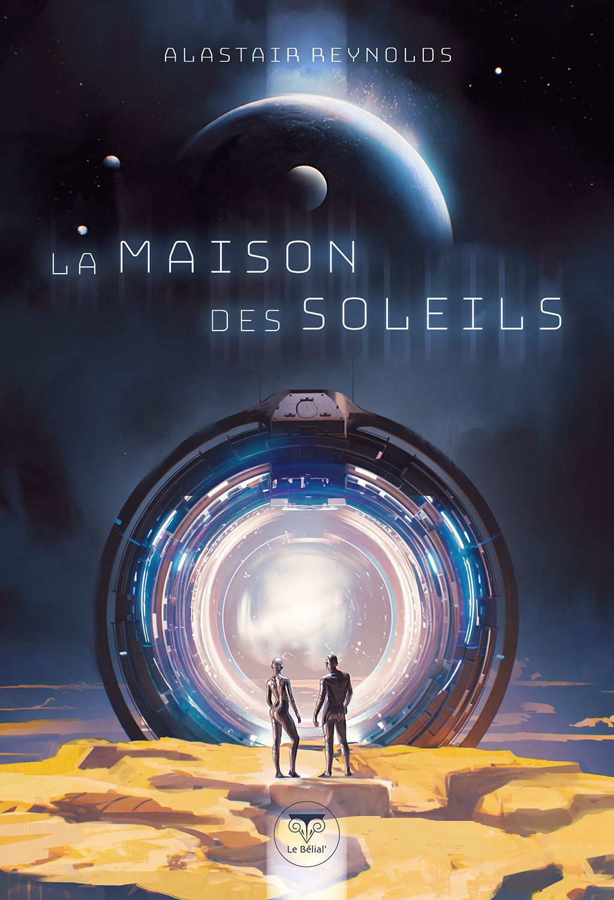
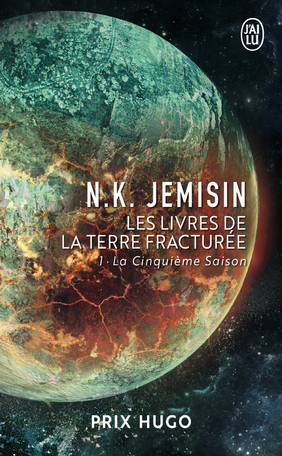
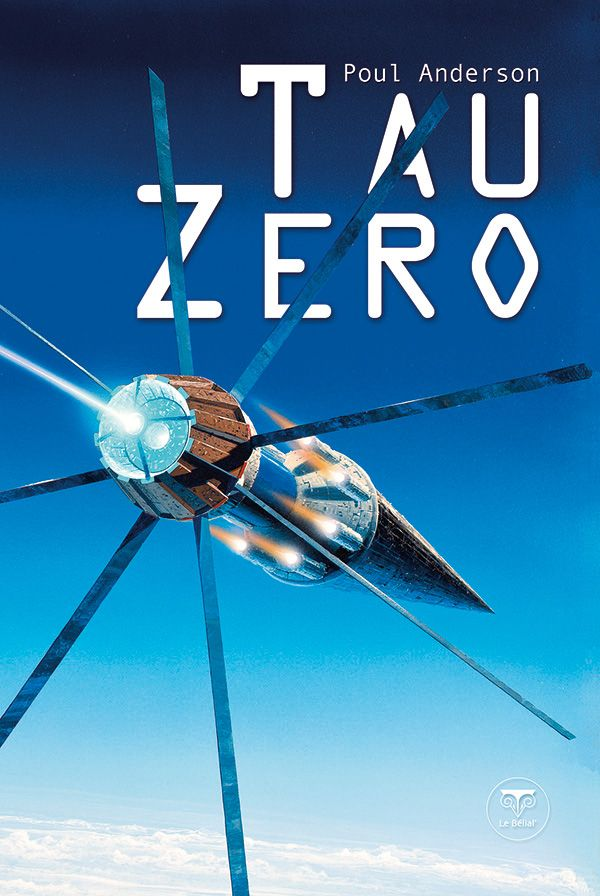
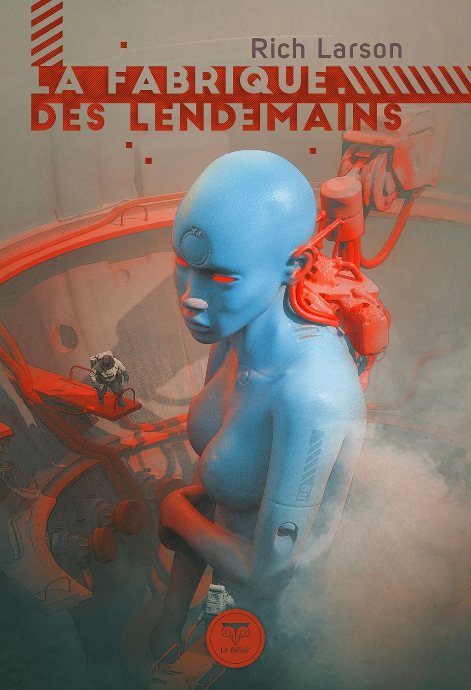
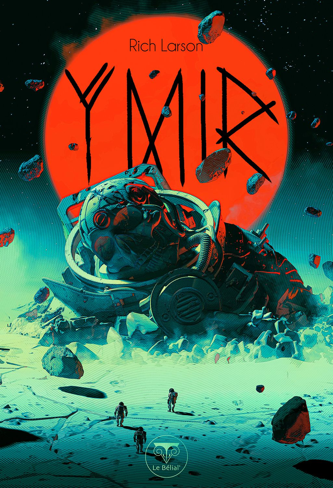
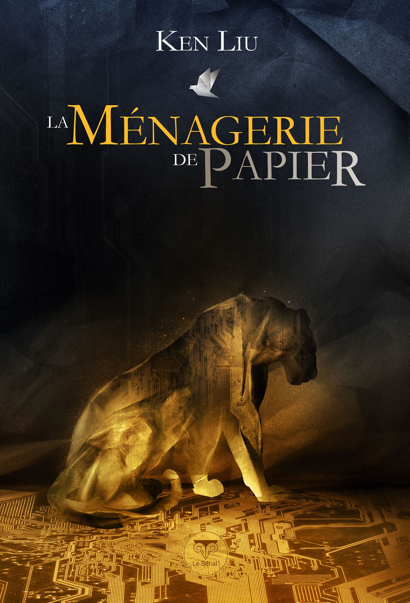
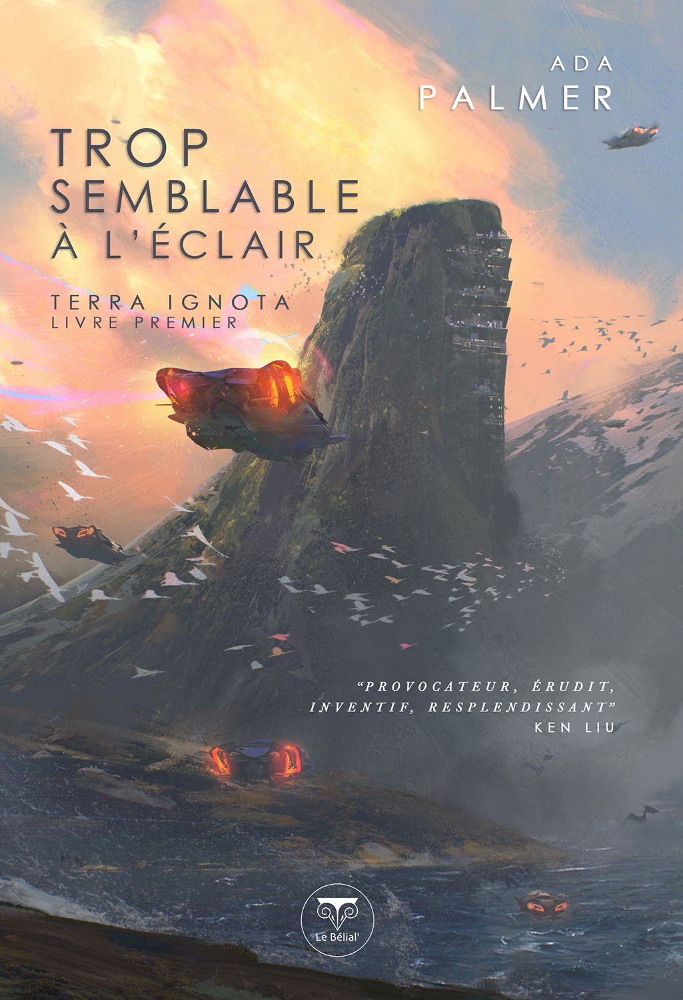

Currently Reading
La marche funèbre des marionnettes

La Maison des Soleils

Books Read
#06 La Cinquième saison

#05 Tau Zéro

#04 La Fabrique des lendemains

#03 Ymir

#02 La ménagerie de papier

#01 Trop semblable à l'éclair
